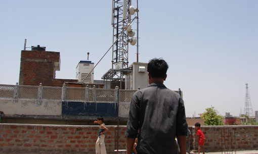
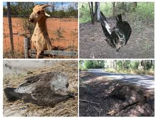

Did you know that network connections can harm animals? From electromagnetic radiation to e-waste, our digital habits have a significant impact on the environment and wildlife.
Image of Radiation rule out

The Impact of Network Connections on Animals

Some of the ways network connections harm animals include:
Electromagnetic radiation from cell towers and Wi-Fi routers affecting bird migration and communication
E-waste from discarded electronics polluting habitats and harming wildlife
Climate change caused by energy consumption from network infrastructure affecting ecosystems
10,000
Tons of e-waste generated annually
50%
Increase in electromagnetic radiation from cell towers
20%
Decline in bird populations due to habitat destruction
Take Action
Here are some ways you can reduce your digital footprint and protect animals: